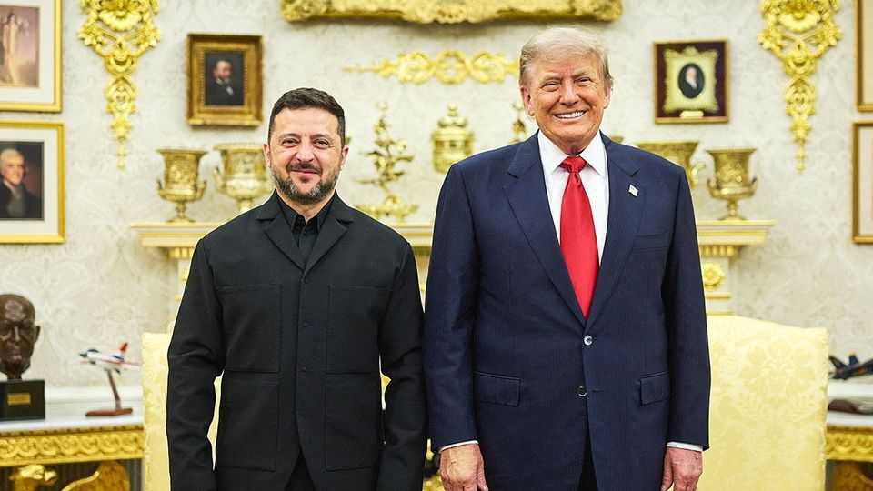

Donald Trump is warming to Volodymyr Zelensky
The man with “no cards” plays a deft hand

Jul 30th 2026
It was not long ago that America’s relationship with Ukraine seemed irreversibly shattered. But on July 28th the Senate voted, 86 to 12, to advance a bill that would impose sanctions on Russia and let the president place steep tariffs on the main importers of its oil and gas. “This piece of legislation may have more effect than anything that’s done on the battlefield,” exulted James Risch, a Republican senator, somewhat implausibly. He credited Donald Trump for the vote’s success.
It is the latest example of thawing relations between American and Ukrainian leaders. Hours before the vote, Mr Trump hosted Volodymyr Zelensky at the White House. “The meeting went very well!”, the president later posted on Truth Social. It is a remarkable turnaround since their bust-up in the Oval Office last year, which was preceded by Mr Trump calling the Ukrainian president a “dictator”. Mr Trump’s warming to Mr Zelensky owes much to Ukraine’s military prowess, as well as his frustration with Russia. The death of Lindsey Graham, a senator and champion of Ukraine whose funeral in Washington took place on the day of Mr Zelensky’s meeting, also seems to have tipped some Republicans off the fence.
Since the war began in February 2022, America has provided over $130bn in direct aid to Ukraine, including $74bn in military equipment and support, according to figures from the Kiel Institute, a think-tank. But in Mr Trump’s second term, there has been no significant legislation or authorisation of help for Ukraine. Though a chunk of aid appropriated during Joe Biden’s presidency remains in the pipeline, Trump officials have already twice paused deliveries of weapons temporarily.
Mr Trump’s newfound friendliness towards Mr Zelensky, according to those watching from the Capitol, seems to reflect growing respect for Ukraine’s military capabilities. Mr Trump has been wowed by Ukraine’s long-range drone strikes, which have reached deep inside Russia. “It’s an escalation, but it’s also an escalation that can help lead to an end,” Mr Trump mused at NATO’s summit in Ankara on July 8th. Ukraine’s ability to build many of its own weapons, and thus reduce its dependency on America, has also helped. The relationship “feels stronger at the moment because the Ukrainians are, in many ways, driving their own success”, points out Heather Conley of the American Enterprise Institute, a conservative think-tank.
Eager to learn from Ukraine’s drone whizzes, America has recently stepped up defence-industrial co-operation. That includes setting up a new factory in America that will churn out drones built from Ukrainian blueprints. Mr Zelensky, for his part, lobbied Mr Trump for more Patriot air-defence interceptors. The two sides have agreed on a licensing deal, though it could take years for production to begin.
It is no coincidence that Mr Trump’s new friendliness towards Ukraine coincides with decidedly chillier relations with Russia. “I think he is beginning to realise, or has already realised, that Putin just lies to him,” says Kurt Volker, a former special representative for Ukraine during the president’s first term. Laura Loomer, an influential MAGA activist and former critic of Ukraine, recently visited the country and now admits she was “bamboozled by Russian propaganda”. Ms Loomer is urging Mr Trump to back Ukraine.
If the meeting in Washington was a success, the next steps in Ukraine are murkier. Ukraine faces the prospect of a rough winter as Russian missiles and drones continue to pound its cities. Peace negotiations are moribund. Two of Mr Trump’s envoys, Steve Witkoff and Jared Kushner, are expected to travel to Kyiv soon for the first time to revive talks, but the chance of progress is slim.
Senate Republicans hope that the sanctions bill will bring Russia back to the negotiating table, but there are obstacles here, too. The bill still faces a vote in the House, where scepticism of Ukraine is stronger among Republicans and where Democrats fear it will give the mercurial Mr Trump even greater power over tariffs. Indeed even if Congress passes the bill, Mr Trump may be wary of imposing tariffs that could raise Americans’ prices at the pump. Nevertheless, for a man who was once told by Mr Trump that he had “no cards”, Mr Zelensky appears to have played a deft hand in Washington. ■
Stay on top of American politics with The US in brief, our daily newsletter with fast analysis of the most important political news, and Checks and Balance, a weekly note that examines the state of American democracy and the issues that matter to voters.